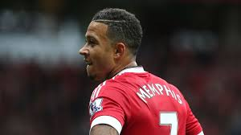
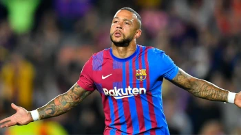
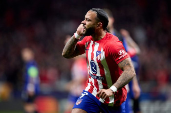
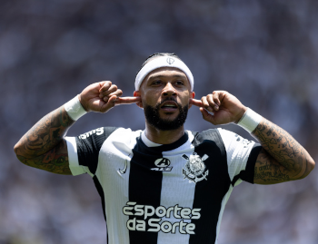

Memphis Depay teve um desempenho notável durante sua passagem pelo PSV Eindhoven, consolidando-se como um dos talentos mais promissores da Europa no período. Ele jogou pelo clube holandês de 2011 a 2015, quando evoluiu de uma jovem promessa para um dos principais destaques do futebol europeu. Depay se destacou especialmente na temporada 2014/2015, em que foi artilheiro da Eredivisie com 22 gols em 30 partidas, desempenhando um papel crucial para que o PSV conquistasse o título da liga após um jejum de sete anos. Sua combinação de velocidade, habilidade técnica e precisão nas finalizações fez dele uma ameaça constante para as defesas adversárias, tanto em lances individuais quanto em cobranças de falta, uma de suas especialidades. Além de seus gols, Memphis também contribuiu com assistências e sua presença ofensiva dinâmica, tornando-se peça-chave no sistema tático da equipe. Seu desempenho no PSV atraiu atenção de grandes clubes europeus, resultando em sua transferência para o Manchester United no verão de 2015. No geral, sua passagem pelo PSV não apenas lançou sua carreira no cenário internacional, mas também deixou um legado de sucesso e reconhecimento pelo papel central que desempenhou no retorno do clube à elite do futebol holandês.

A passagem de Memphis Depay pelo Manchester United, entre 2015 e 2017, foi marcada por expectativas altas, mas desempenho inconsistente. Após brilhar no p, o jogador holandês chegou ao clube inglês como uma das contratações mais promissoras, com o peso de vestir a icônica camisa 7, utilizada por lendas como George Best, Eric Cantona e Cristiano Ronaldo. Depay teve um início promissor, mostrando lampejos de seu talento com gols importantes e exibições individuais marcantes em competições como a Liga dos Campeões. No entanto, ele enfrentou dificuldades para se adaptar ao ritmo intenso da Premier League e ao estilo tático do técnico Louis van Gaal, que comandava o United na época. Sua irregularidade em campo e a forte concorrência por posição limitaram suas oportunidades de brilhar. Com a chegada de José Mourinho como treinador em 2016, as chances de Depay se firmar no time diminuíram ainda mais. Ele passou a ter menos minutos em campo, e sua confiança parecia abalada. Apesar de mostrar habilidade técnica e criatividade em algumas ocasiões, sua passagem acabou sendo considerada decepcionante em comparação ao hype inicial. Em janeiro de 2017, Memphis foi vendido ao Lyon, na França, onde conseguiu reerguer sua carreira. Embora sua passagem pelo Manchester United não tenha atingido o potencial esperado, ela serviu como uma experiência valiosa de aprendizado, que ajudou a moldar o jogador que ele viria a se tornar posteriormente.
A passagem de Memphis Depay pelo Lyon, de 2017 a 2021, marcou um renascimento na carreira do jogador holandês. Após uma experiência decepcionante no Manchester United, ele encontrou no clube francês o ambiente ideal para redescobrir sua melhor forma e se estabelecer como um dos principais jogadores da Ligue 1. Desde sua chegada, Depay se tornou peça central no ataque do Lyon, contribuindo com gols, assistências e atuações consistentes. Ele rapidamente assumiu o papel de líder dentro e fora de campo, mostrando maturidade e confiança que haviam faltado em sua passagem anterior. Seu estilo de jogo, baseado em habilidade técnica, visão de jogo e capacidade de decidir partidas, fez dele um dos jogadores mais temidos do campeonato francês. A temporada 2020/2021 foi particularmente marcante. Como capitão, Memphis liderou o Lyon a uma forte campanha na Ligue 1, marcando 20 gols e dando 12 assistências, números que evidenciam sua importância ofensiva. Além disso, ele brilhou na Liga dos Campeões, ajudando o time a alcançar as semifinais na temporada 2019/2020, eliminando gigantes como Juventus e Manchester City no caminho. Durante seus anos no Lyon, Depay se reinventou como um atacante completo, capaz de atuar como artilheiro, criador de jogadas e líder em momentos decisivos. Seu desempenho atraiu a atenção de grandes clubes europeus, resultando em sua transferência para o Barcelona em 2021. No geral, sua trajetória no Lyon não apenas revitalizou sua carreira, mas também consolidou sua reputação como um dos melhores atacantes de sua geração.

A passagem de Memphis Depay pelo Lyon, de 2017 a 2021, marcou um renascimento na carreira do jogador holandês. Após uma experiência decepcionante no Manchester United, ele encontrou no clube francês o ambiente ideal para redescobrir sua melhor forma e se estabelecer como um dos principais jogadores da Ligue 1. Desde sua chegada, Depay se tornou peça central no ataque do Lyon, contribuindo com gols, assistências e atuações consistentes. Ele rapidamente assumiu o papel de líder dentro e fora de campo, mostrando maturidade e confiança que haviam faltado em sua passagem anterior. Seu estilo de jogo, baseado em habilidade técnica, visão de jogo e capacidade de decidir partidas, fez dele um dos jogadores mais temidos do campeonato francês. A temporada 2020/2021 foi particularmente marcante. Como capitão, Memphis liderou o Lyon a uma forte campanha na Ligue 1, marcando 20 gols e dando 12 assistências, números que evidenciam sua importância ofensiva. Além disso, ele brilhou na Liga dos Campeões, ajudando o time a alcançar as semifinais na temporada 2019/2020, eliminando gigantes como Juventus e Manchester City no caminho. Durante seus anos no Lyon, Depay se reinventou como um atacante completo, capaz de atuar como artilheiro, criador de jogadas e líder em momentos decisivos. Seu desempenho atraiu a atenção de grandes clubes europeus, resultando em sua transferência para o Barcelona em 2021. No geral, sua trajetória no Lyon não apenas revitalizou sua carreira, mas também consolidou sua reputação como um dos melhores atacantes de sua geração.
Memphis Depay chegou ao Atlético de Madrid em janeiro de 2023, vindo do Barcelona, em busca de uma nova fase em sua carreira. Sob o comando de Diego Simeone, Depay rapidamente mostrou seu valor, adaptando-se ao estilo combativo e organizado característico do clube espanhol. Apesar de enfrentar concorrência em um elenco com várias opções ofensivas, Memphis demonstrou sua qualidade técnica, versatilidade e faro de gol. Ele contribuiu com gols importantes, incluindo algumas atuações decisivas em jogos chave da La Liga. Seu impacto foi notável, mesmo em uma equipe conhecida por seu enfoque defensivo, pois trouxe criatividade e dinâmica ao setor ofensivo. A mentalidade competitiva do Atlético pareceu casar bem com a personalidade de Memphis, que mostrou garra e dedicação dentro de campo. Além disso, sua experiência internacional ajudou a enriquecer o time em momentos cruciais. Embora sua passagem pelo clube ainda esteja em andamento, o atacante holandês já se tornou uma peça valiosa no elenco de Simeone, com potencial para desempenhar um papel ainda maior nas próximas temporadas. No Atlético, Memphis continua buscando afirmação como um dos grandes atacantes europeus, utilizando sua habilidade técnica, precisão nas finalizações e inteligência tática para contribuir ao sucesso do time nos campeonatos que disputa.
Desde sua chegada ao Corinthians em setembro de 2024, Memphis Depay tem se destacado como uma das principais contratações do clube. Em 10 partidas pelo Campeonato Brasileiro, o atacante holandês marcou 6 gols e se tornou uma peça fundamental na campanha que garantiu ao time a classificação para a fase preliminar da Copa Libertadores. Um dos momentos de maior destaque foi no dia 3 de dezembro, quando marcou dois gols na vitória por 3 a 0 sobre o Bahia. Um deles foi uma cobrança de falta impressionante, acertando o travessão antes de entrar, consolidando sua reputação como um jogador de alto nível técnico e decisivo em momentos importantes. Além disso, Depay tem mostrado boa adaptação ao estilo do futebol brasileiro, combinando sua habilidade técnica com presença física, e rapidamente se tornou um ídolo para a torcida corinthiana. A expectativa é que ele continue como uma das referências do time em 2025.
Ao longo de sua carreira, Memphis Depay consolidou-se como um jogador de impacto global, com passagens marcantes por diversos clubes e pela seleção da Holanda. Seus números demonstram sua consistência e versatilidade como atacante. Até dezembro de 2024, Depay acumula: - Clube PSV Eindhoven (2011–2015): 124 jogos, 50 gols e 29 assistências. Foi artilheiro da Eredivisie em 2014/2015 com 22 gols. - Manchester United (2015–2017): 53 jogos, 7 gols e 6 assistências, em uma passagem abaixo das expectativas. - Lyon (2017–2021): 178 jogos, 76 gols e 55 assistências, sendo peça central do time e liderando campanhas importantes. - Barcelona (2021–2023): 41 jogos, 14 gols e 2 assistências, destacando-se em momentos decisivos. - Atlético de Madrid (2023–2024): 23 jogos, 8 gols e 3 assistências, contribuindo em competições nacionais e europeias. - Corinthians (2024): 10 jogos e 6 gols no Campeonato Brasileiro, com grande impacto inicial. Na seleção da Holanda, Depay é um dos maiores artilheiros da história, com mais de 40 gols em cerca de 90 partidas, mostrando sua consistência também em nível internacional. Esses números refletem sua evolução de uma jovem promessa no PSV a um líder maduro e versátil. Com habilidades técnicas refinadas, capacidade de decisão e liderança, Memphis continua sendo um jogador de destaque no cenário mundial, adaptando-se a diferentes estilos de jogo ao longo de sua jornada.